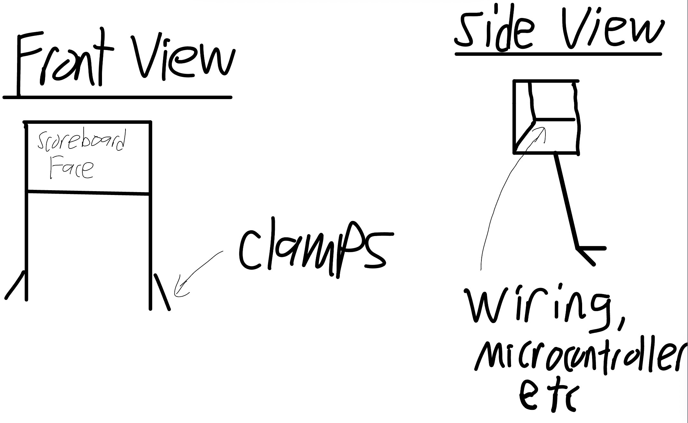
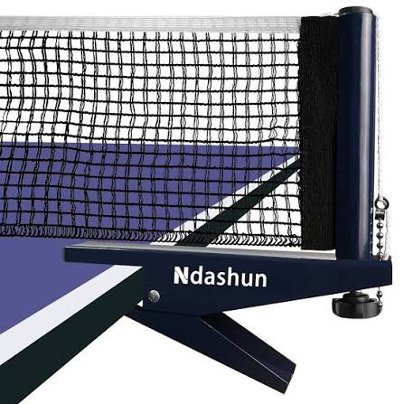
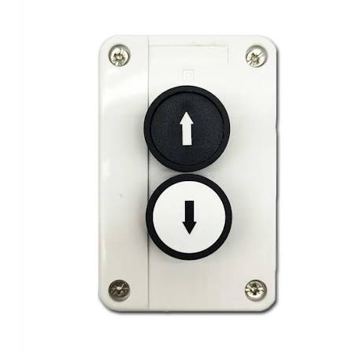
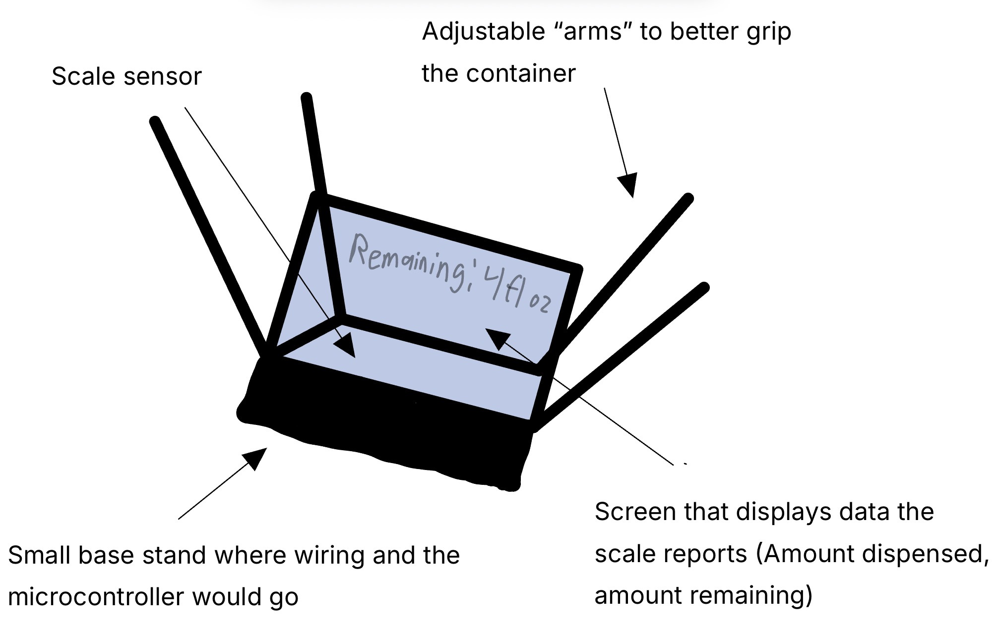
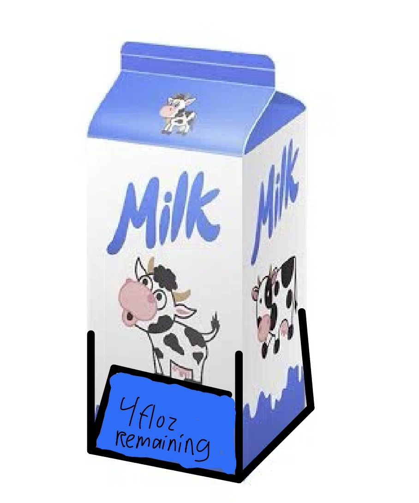
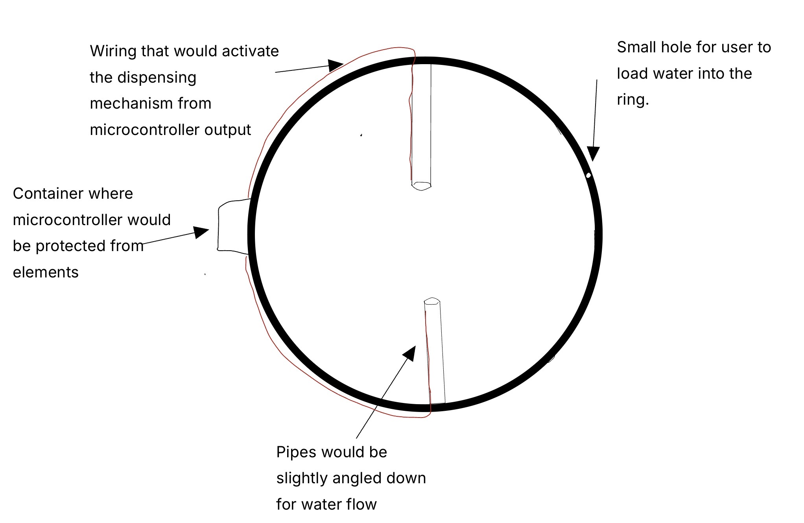

What inspired you to create this project? What do you think this project will look like once it's completed? When playing ping-pong it is very easy to lose track of score and it is annoying to use any scoring app since it requires going to your phone after every rally and when one person controls the scoreboard cheating is easily possible. (especially with my friends)
My solution would be a physical scoreboard that mounts to the table and is controlled by remote controls that both players would have. This remote control would change the score (inc/dec) and in order to prevent cheating both players must make an input on their controller for the score change to occur.

The scoreboard will be elevated with the elecronic components hidden in in a compartment behind the scoreboard face.

The mount used would be the same/similar to the clamp down mounts ping-pong nets typically use.

This would be roughly how the remote controller looks (ideally pocket sized)!
My second idea is a weight sensor that mounts at the bottom of a liquid container: milk, water jugs, etc. The user would put this sensor on a new container and would input the volume of liquid inside (on the label of the container). Then after each use of the substance inside, the sensor would work with a microcontroller to calculate the amount just used and the amount remaining. The microcontroller could also easily convert the displayed data to various units of measure.

This would be about how the whole device would look

This is an example of how the device would look when mounted to a container. If possible I would love the base of the device to be adjustable to fit various container sizes.
My third idea is an irrigation system for garden pots that clips onto the edge of the pot. There would be tubes that aim water into the soil of the pot. The activation of water dispensing could be triggered remotely or be based on a timer system. The dispening mechanism would be some sort of valve or hole that is able to be closed/opened, all proccessed through a microcontroller. However, the main difficulty I see with this project is managing the wiring in a way that avoids touching the water.
